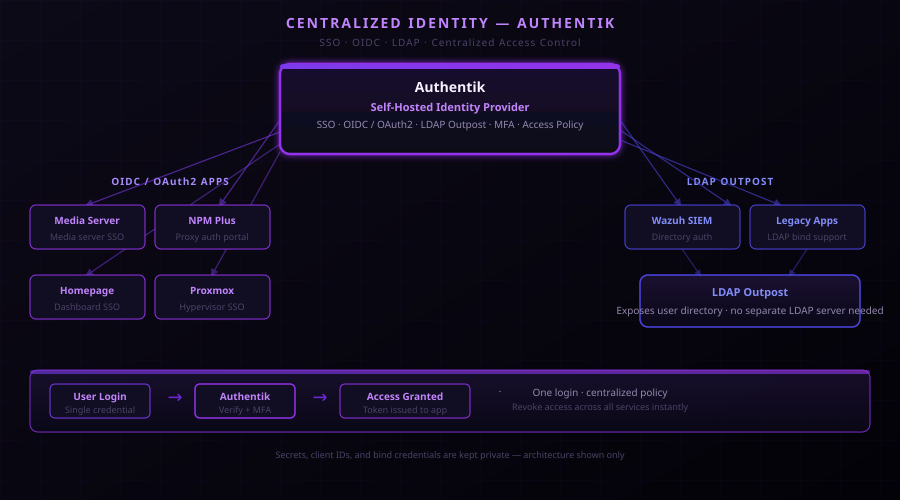

Single Sign-On
Services that support OIDC authenticate through Authentik rather than managing their own user databases. One login, consistent access control, and a single place to disable a user across all integrated apps.
Project | Identity & Access
Authentik deployed as a self-hosted identity provider across the lab — SSO, OIDC, and LDAP for services that support it, centralized user management, and a single login policy instead of scattered per-app credentials.

Services that support OIDC authenticate through Authentik rather than managing their own user databases. One login, consistent access control, and a single place to disable a user across all integrated apps.
Authentik's LDAP outpost lets services that only understand directory-style authentication bind against the same user store as modern OIDC apps — no separate directory server needed.
Users and groups are managed in one place. Granting or revoking access to a service is a policy change in Authentik, not a manual account change in every app — the same model enterprise IAM teams use at scale.
IAM is one of the first things enterprise environments ask junior admins to touch — password resets, provisioning, group policy. I already know what a centralized identity provider looks like from the inside: how SSO flows work, why LDAP still matters, and how access policy changes propagate. That's day-one relevant.
Project pages that cover the networking and security stack.
A production-grade virtualization lab: Proxmox cluster, Cisco switching, and Synology storage.
View project ->Hardened gateway implementation: VLAN segmentation, AdGuard DNS, and Suricata IDS.
View project ->Active security monitoring and log aggregation for endpoint behavior and compliance.
View project ->Multi-node compute environment running 20+ VMs/LXCs with focus on high-availability.
View project ->Open to Junior Network Administrator, SOC Analyst, NOC, MSP, Help Desk, IT Support, and Cybersecurity Internship opportunities.
Email: NazeemDickey@gmail.com | Boynton Beach, FL